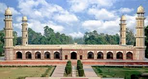
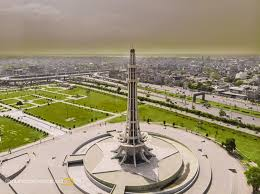
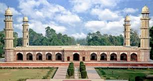
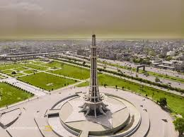

Featured Travel Story:
Whether you're a seasoned traveler or just starting out, I hope you'll find something on my blog that you enjoy.
Guess who? It's Wali AK!
Travelling is kinda my thing. Stick around for some epic tales, handy guides, and all the travel inspo you'll ever need.
Ya know, travel isn't just about jetting off. It's about self-discovery and all those cheesy (but true!) clichés. Dive into the world with me, will ya?
Hey there, fellow adventurers! üåç Ever taken a road trip that not only covers miles but also bridges the gap between cultures? Well, buckle up, Read More
'cause I just did, and it was epic! Yup, I drove my motor car from Khyber Pakhtunkhwa all the way to Lahore, Pakistan. You know what they say: The journey is as amazing as the destination, and boy, was it ever!
As a proud Pathan, kicking off my journey from Khyber Pakhtunkhwa was a surreal moment. Filled up the tank, threw in my bags, and hit the road. Ah, the beauty of those mountainous terrains! You have to see it to believe it. üèûÔ∏è
AStepping into Lahore felt like walking into a big, warm embrace. I was a Pathan in the land of Punjabis, and guess what? The hospitality was out of this world! From "Assalamu Alaikum" to "Ji aaya nu," the greetings were heartfelt and the smiles genuine.ü§ù
The Lahori kebabs, the biryanis, the sweet lassi—my taste buds were in paradise! Oh, and being from Khyber Pakhtunkhwa, I gotta say, the love for meat is universal in Pakistan. Yum!
You can't go to Lahore and not experience its rich culture. I checked out a local Sufi music event. Now, we Pathans have our Tumbalala, but seeing those whirling dervishes? Man, that's a whole new level of spiritual!
You know what stood out for me? The amazing people! Maybe it‚Äôs the Pathan in me appreciating good company, but the Punjabis know how to make you feel at home. We shared stories, jokes, and lots of chai. The vibes were just so genuine.üë´
As I drove back to Khyber Pakhtunkhwa, a piece of my heart stayed behind. Lahore, you've been an amazing host and a beautiful experience! Shukriya and until next time!
So there you go, peeps! Lahore isn't just a destination; it's where cultures meet and hearts connect. Drop a comment, let me know what you think. Where should this Pathan wander next? Signing off, Your Fellow Adventurer üåç‚úàÔ∏èüöó
 



Whether you're a seasoned traveler or just starting out, I hope you'll find something on my blog that you enjoy.